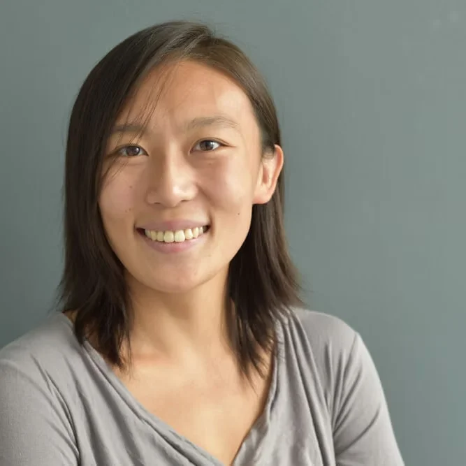

Fangwen Zhao
PhD Candidate at CeMM with Christoph Bock
I am a data-capable immunologist passionate about leveraging -omics data to unravel the complexity of immune-relevant disease states. During my PhD, I complemented my immunology background with computational expertise to become a full-fledged bioinformatician motivated to systematically dig deeply into disease biology.
I am currently finishing my PhD in the Medical Epigenomics lab of Christoph Bock at CeMM and the Medical University of Vienna. My project focuses on the systematic characterization of epigenetic dysregulation underlying rare monogenic immune disorders. Prior to this, I completed an Honours BSc in Microbiology and Immunology at the University of British Columbia.
Publications
-
Chromatin mapping uncovers convergent epigenetic dysregulation underlying diverse monogenic inborn errors of immunity
Fangwen Zhao, Hana Imrichova*, Safa Baris Bal*, Hassan Abolhassani, Anamika Awasthi, Rob ter Horst, Birgit Ransmayr, Christoph B. Geier, Lisa Schuster, Ingrid Pico-Knijnenburg, Raúl Jiménez-Heredia, Patricia Stepper, Stefan Ladstätter, Albert Segarra-Roca, Ana V. Zornoza, Dalal Omar Alginani, André F. Rendeiro, Qiang Pan-Hammarström, Hermann M. Wolf, David Lara-Astiaso, Felipe Prosper, Lennart Hammarström, Mirjam van der Burg, Kaan Boztug, Thomas Krausgruber, Christoph Bock — *Equal contribution
In preparation
-
MrBiomics: Modules & Recipes Augment Bioinformatics for Multi-Omic Analyses
Stefan Reichl*, Robert Bednarsky*, Lukas Folkman, Bekir Ergüner, Daniele Barreca, Fangwen Zhao, Daria Romanovskaia, Rob ter Horst, Luka Dobnikar, Christoph Bock — *Equal contribution
In preparation
-
Multi-omics analysis of naïve B cells of patients harboring the C104R mutation in TACI
Frontiers in Immunology, 2022 — Neftali Ramirez, Sara Posadas-Cantera, Nils Langer, Andrés Caballero G. de Oteyza, Michele Proietti, Bärbel Keller, Fangwen Zhao, Valentina Gernedl, Matteo Pecoraro, Hermann Eibel, Klaus Warnatz, Esteban Ballestar, Rolf Geiger, Cornelis Bossen, Bodo Grimbacher
-
Chromatin mapping and single-cell immune profiling define the temporal dynamics of ibrutinib response in CLL
Nature Communications, 2020 — André F. Rendeiro, Thomas Krausgruber, Nikolaus Fortelny, Fangwen Zhao, Thomas Penz, Matthias Farlik, Linda C. Schuster, Amelie Nemc, Szabolcs Tasnády, Marienn Réti, Zoltán Mátrai, Donát Alpár, Csaba Bödör, Christian Schmidl, Christoph Bock
Talks & Presentations
- Keystone Symposium for Systems Immunology & Immunoengineering, Vancouver (2026) — Oral
- Harald von Boehmer Midwinter Conference – Advances in Immunobiology, Seefeld in Tirol (2026) — Poster
- The Biology of Genomes, Cold Spring Harbor (2022) — Poster
- 1st Summer Symposium Systems Immunology, Würzburg (2022) — Poster
- EMBL PhD Symposium – Zooming into life (2021) — Oral
- The Meeting of the European Society for Immunodeficiencies, Lisbon (2018) — Poster
- The Meeting of the European Society for Immunodeficiencies, Edinburgh (2017) — Oral
Awards & Funding
- Keystone Symposia Future of Science Fund (2026)
- ERA-NET E-RARE Grant (2018) — Major contributions to project direction and grant writing for "Integrative Multi-Omics Analysis of Primary Antibody Deficiency Patients" awarded to Dr. Christoph Bock and consortium
- UBC Chancellor's Scholar (2016)
- Science Undergraduate Research Experience Award (2015)
- NSERC Undergraduate Student Research Award (2014)